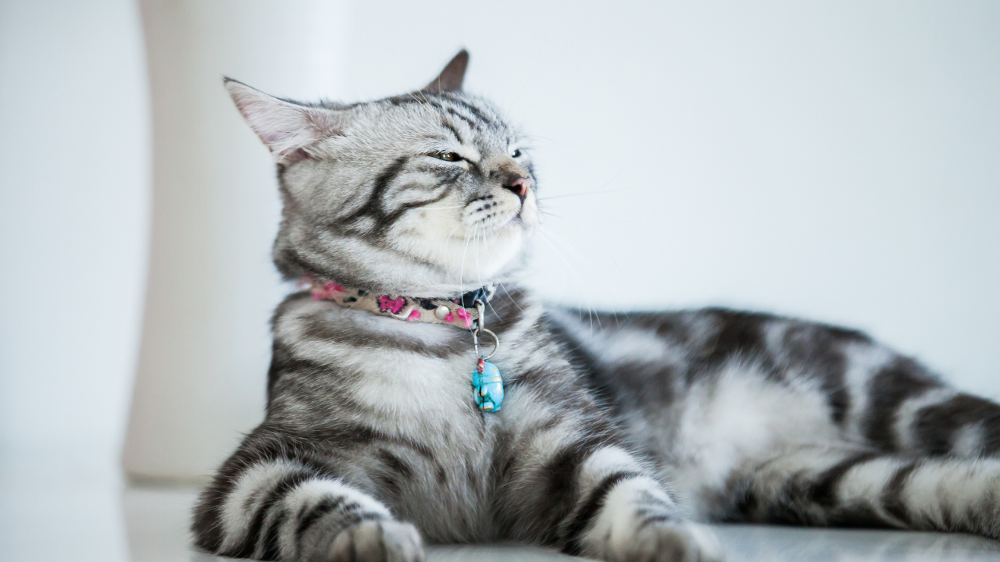
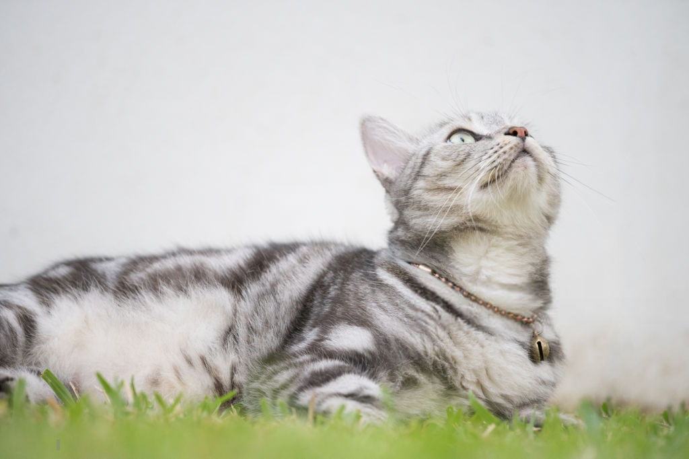

Beanie's charm isn't solely in her striking looks; it's also in her reputation for being exceptionally tender and loving. She'll nestle into your lap like a cozy throw, happily purring while reveling in your affection. Despite her dignified manner, she's truly a playful spirit, ever eager to partake in a round of chase or swat at a toy mouse.
Informations :
Name: Beanie
ID: 123123
Date of Admission: May 02, 2024
Date of Birth: Estimated to be August 20, 2023
Breed: American shorthair
Sex: Female
Weight: 3.2 kg
Color/Markings: Grey with black lines


General Health Assessment:
Upon her arrival, Beanie appeared vigilant.
No obvious signs of respiratory distress or abnormalities.
Vaccination History:
Core vaccines administered:
FVRCP (Feline Viral Rhinotracheitis, Calicivirus, Panleukopenia): Last administered on May 05, 2024.
Rabies: Last administered on May 05, 2024.
Due for booster shots: Rabies vaccine due on June 05, 2025.
Medical Concerns:
Dental health: No tartar accumulation observed.
Weight management: Beanie's weight is within or above the optimal range. Suggest keeping an eye on food consumption and offering a high-calorie diet to aid in gaining weight.
Ongoing skin irritation: None
Behavioral observation: Does not appear to be shy, she is a confident cat